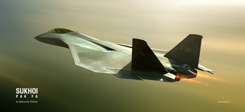
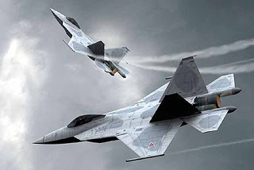

Column Selection can be used to select a rectangular area of a file. Column selection doesn't operate via a separate mode, instead it makes use of multiple selections.You can use additive selections to select multiple blocks of text, or subtractive selections to remove a block.

The Sukhoi/HAL Fifth Generation Fighter Aircraft (FGFA) is a fifth-generation fighter being developed by India and Russia. It is a derivative project from the PAK FA (T-50 is the prototype) being developed for the Indian Air Force. FGFA was the earlier designation for the Indian version, while the combined project is now called the Perspective Multi-Role Fighter (PMF).
The completed PMF will include a total of 43 improvements over the T-50, including stealth, supercruise, advanced sensors, networking and combat avionics.
The Sukhoi/HAL Fifth Generation Fighter Aircraft (FGFA) is a fifth-generation fighter being developed by India and Russia. It is a derivative project from the PAK FA (T-50 is the prototype) being developed for the Indian Air Force. FGFA was the earlier designation for the Indian version, while the combined project is now called the Perspective Multi-Role Fighter (PMF).The completed PMF will include a total of 43 improvements over the T-50, including stealth, supercruise, advanced sensors, networking and combat avionics.
